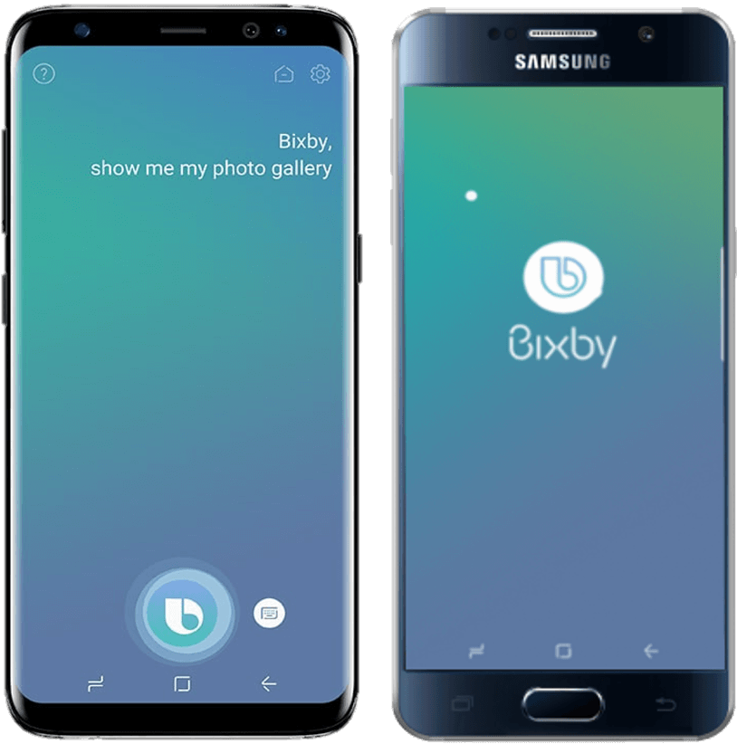
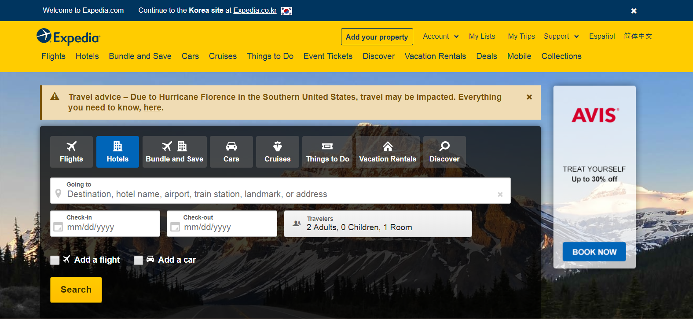
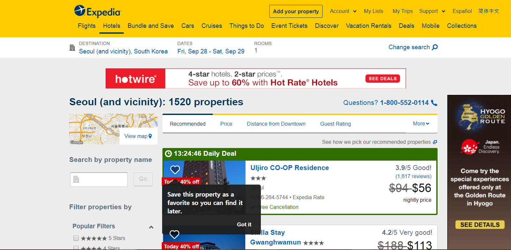
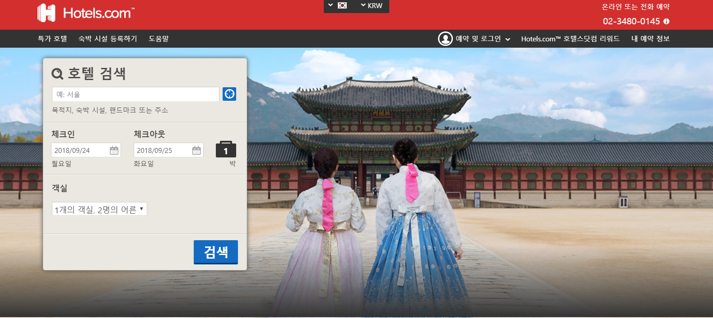
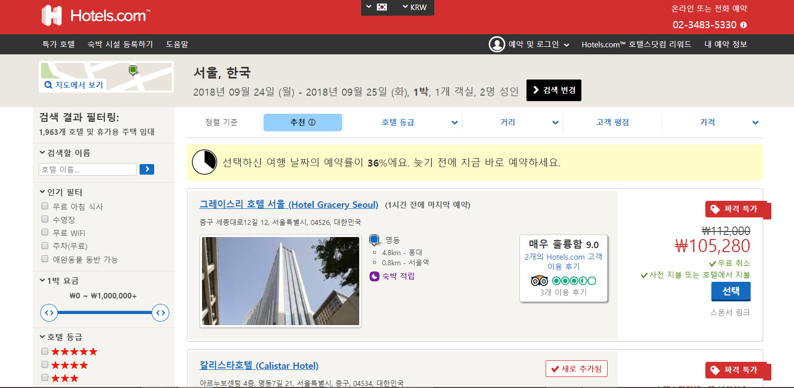
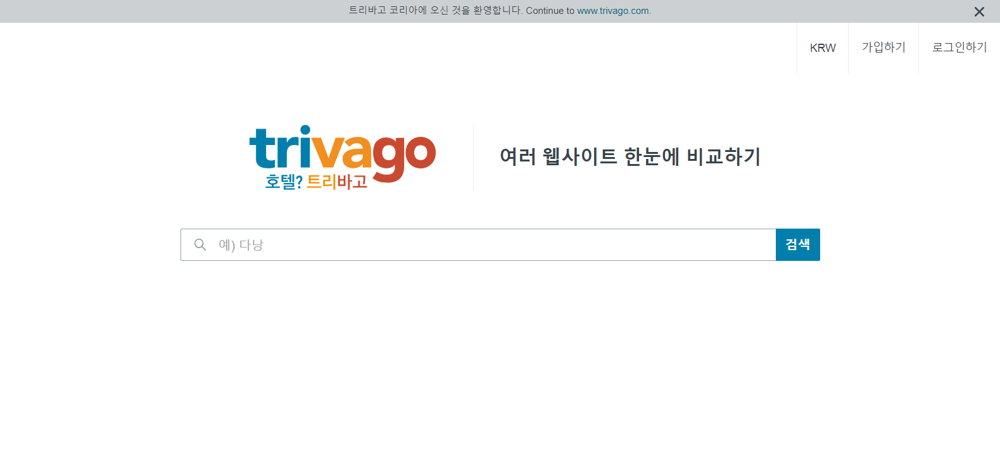
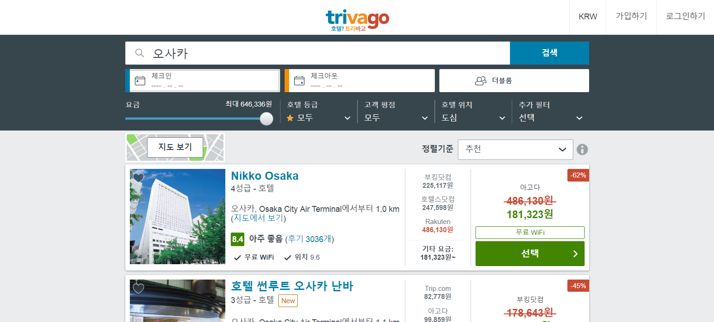

1. Review of the Samsung Bixby
(1) Bixby란 무엇인가

Samsung Bixby는 삼성에서 개발한 음성 인식 플랫폼으로, 2017년 3월 29일 공개된 삼성전자의 갤럭시S8에 탑재된 인공지능(AI) 가상 비서이다. Bixby는 지능형 검색엔진인 울프럼 알파를 적용하여 자연스러운 대화형의 인터페이스를 지원한다.
(2) Bixby 인터페이스 평가
Functionality
사용자는 Bixby가 개인 비서처럼 스마트폰에서 Task를 대신 수행해 줄 것이라는 기대(요구)를 한다.
영상에서 볼 수 있듯이, 사용자가 음성으로 Bixby에게 명령을 전달하면, Bixby는 스마트폰에서 해당 Task를 대신하여 처리해 준다. 이 과정에서 입력 받은 음성을 텍스트로 변환하여 보여줌으로써 사용자는 음성이 제대로 전달되었는지 확인할 수 있다.
또한 음성의 종류(남성/여성), 답변 스타일(간단히/자세히), 음질 등을 설정할 수 있어 사용자의 preference를 어느정도 반영할 수 있다. 따라서 Bixby는 사용자의 Requirement와 Preference를 충족한다.
Performance
영상을 보면, 사용자가 빅스비에게 지시를 한 후 2~3초 정도 뒤에 Task가 수행된다. 사용자가 오래 기다린다고 느끼지 않을 만큼 "빠르게" 수행됨을 볼 수 있다.
Mobility
말을 할 수 있는 상황이라면 어디에서나 사용할 수 있으므로, Mobility가 높다고 볼 수 있다. 이같은 강점은 특히 요리나 운전, 샤워 등 스마트폰을 직접 터치할 수 없는 상황에서 사용자에게 매우 유용한 기능이 될 것이다.
Usability
Bixby는 간단하고 직관적인 인터페이스를 제공한다. 처음 사용하는 사람도 어떻게 사용하는 지 알 수 있다. 즉, Training cost가 작다.
Bixby는 또한 다양한 상황에서 실행시킬 수 있도록 여러 가지 접근을 제공한다.
영상에서 보는 것처럼, Bixby는 음성으로 직접 호출하는 방법 (“하이 빅스비”), 버튼을 짧게 누르는 방법, 버튼을 길게 눌러 누르는 동안만 음성을 인식하는 방법 세 가지로 실행시킬 수 있다.
사용자는 “가상의 인공지능 비서”가 간단하게 음성으로 명령을 내리고 전달받은 Task를 대신 수행해 줄 것이라는 기대를 한다. 이러한 기대는 Bixby가 간단하게 사용자의 음성만을 입력으로 받고, 전달받은 명령을 최대한 실수없이 수행하도록 강제한다.
Intelligence
Bixby는 타 어플리케이션 실행, 메모/일정 작성, 리마인더, 계산, 문자 작성 및 전송, 카카오톡 전송, 페이스북 글 게시, 전화 송수신, 인터넷 검색, 음악/라디오 재생, 날씨 정보 검색, 시계/알람, 은행서비스, 쇼핑리스트 관리, 택시 예약 등 스마트폰에서 이루어지는 거의 대부분의 Task를 대신 처리 할 수 있다.
또한 Bixby는 딥러닝 기반으로, 사용자의 일상정보를 학습 후 뉴스, 유튜브 영상같은 콘텐츠를 추천하는 등의 지능적인 기능을 지니고 있다. 사용자는 “뉴스 보여줘” 와 같은 간단한 음성명령으로 간편하게 해당 기능을 이용할 수 있다.
2. Comparative Review of the Travel Planning Web Sites
(1) Expedia

)
Expedia에 처음 접속하면 첫 화면에 호텔을 검색할 수 있는 창을 큰 사이즈로 제공한다. 호텔을 검색해보면 가운데에 검색 결과를 보여주고 좌측에 지도와 필터링 옵션 등을 보여준다. 아래 두 웹사이트와 비교해 보면 Hotels.com과 형식은 비슷하지만 우측과 상단에 광고가 위치하여 가독성은 비교적 떨어진다.
(2) Hotels.com


Hotels.com은 전체적으로 Expedia와 매우 유사한 형식을 가지고 있다. 메인 화면에서 마찬가지로 호텔을 검색할 수 있는 창을 제공한다. Expedia에 비해 창의 사이즈는 더 작지만 배경과 구분되기 쉬운 색상을 채택하여 사용자가 주목하기 쉽도록 하였다.
(3) Trivago


Trivago는 위의 두 웹사이트에 비해 가장 간단하고 직관적인 인터페이스를 제공한다. 검색을 하게 되면 체크인, 체크아웃, 객실 선택을 할 수 있는 인터페이스를 제공한다. 또한 요금과 호텔 등급 등을 필터링하는 설정하는 부분이 상단에 위치하고 Body의 양측이 여백으로 되어있기 때문에 가독성이 좋아 핵심 정보를 한눈에 파악하기 쉽다. 그러나 기능적인 측면에서 보면 체크인/체크아웃/객실 등을 웹페이지 초기 화면에서 설정할 수 없기 때문에 위의 두 웹사이트보다 더 좋다고 보기는 힘들다.
결론
주관적으로 평가했을 때, 형식적인 측면에서 보면 Trivago가 비교적 가장 우수하고 Expedia가 가장 미흡하다고 생각되고, 기능적인 측면에서는 Expedia와 Hotels.com이 Trivago보다 더 우수하다고 생각된다.